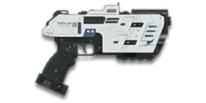

← Back to the U-100 Lastly comparison
Sage Guide · Nanite Systems Operatives · Pistol — Secondary Weapon
The Nanite Systems Operatives’ standard-issue pistol — the only starter sidearm whose full damage reaches 15 metres. Free, slow, and the longest arm of the four.
The one-line verdict: Six shots to kill, 167 damage a bullet, 12 in the magazine: the pistol that trades fire rate and capacity for reach. Fight at 10–15 metres, tap at the rhythm, reload after every kill — and buy the Extended Magazine first.

The U-100 Lastly · Nanite Systems Operatives · 0 certs · standard issue
Picture the scene, because you’ve probably lived it: you’re sprinting across a courtyard, an enemy appears, and you do everything at once — pull the trigger while you’re still running, then press aim-down-sights (ADS) a split-second later, finger still down. The sight picture snaps in, it looks precise… and your bullets spray everywhere except the man in your crosshair. He kills you. It feels like the game cheated. It didn’t — here’s what actually happened. And with a pistol the lesson matters twice over: this is the gun you draw when your primary is empty, so the fight is already half-lost if your first shots miss.
Four beats, left to right — the same mistake the cards above describe, drawn out.
1 · SprintingYour cone starts maxed at 7.0° — the widest it can ever be.
2 · Trigger heldFiring from the hip while running — every shot adds bloom.
3 · ADS, mid-holdThe sight looks precise — but aiming down sights does not reset bloom.
4 · The sprayBullets fly out of the wide cone you built. The enemy walks away.
Same fight, done right. Each beat has a job, and the order is the whole lesson.
1 · StopLet go of sprint (and the trigger). About 0.3 s for the gun to settle.
2 · AimPress ADS and let the sight come up (~0.15 s).
3 · FireNow fire — from the aimed cone. First shots land where the dot points.
The exception — under ~8 m, skip the whole danceHipfire works, no ADS needed, and stopping is optional. Keep moving, strafe, and let the hipfire ring do the work.
You started firing from a sprint, from the hip. Sprinting is the least accurate state in the game: your cone of fire starts at 7.0° — fully bloomed, the widest it can ever be. Every shot you fire from the hip widens it further still (+0.12° per shot).
Then you pressed ADS mid-hold — and nothing reset. Aiming down sights does not shrink a cone of fire that is already bloomed. The scope only gives you a precise picture; the bullets keep flying out of the wide cone you built while running and hipfiring. That’s the whole mystery: accurate-looking aim, wildly inaccurate gun.
Two timers stack the deck further: your gun needs about 0.3 s to settle after a sprint, and raising the sight itself takes ~0.15 s. Trigger held through all of it means your first half-second of fire is pure confetti — and a pistol magazine is far too small to waste.
1 · Feet. Let go of sprint (and the trigger, if you’re already holding it). Stop, or drop into a strafe — anything but a full sprint.
2 · Sight. Press ADS and let the sight come up. This takes a heartbeat — that’s fine, a quarter-second of patience is cheaper than a magazine of misses.
3 · Trigger. Now fire. Starting from the aimed cone of 0.30°, your first shots land where the dot points, and you control the bloom from zero instead of inheriting a maxed-out cone.
Stop → aim → fire. If you take one habit from this entire page, take this one. You’ll practise exactly this rhythm in the simulator in section 04.
Every enemy infantry has 1,000 health (500 shield + 500 health). Your bullet does 167 damage up close, fading to 125 at long range. Headshots count double, leg shots count less (×0.9). That gives you three numbers worth memorising — and remember what this gun is for: it finishes fights your primary started, so the kill usually costs fewer of these bullets than the table says.
| Range | Damage | Head | Chest | Legs | Chest vs shielded Heavy |
|---|---|---|---|---|---|
| Close · 5 m | 167 | 3 | 6 | 7 | 9 |
| Close · 10 m | 167 | 3 | 6 | 7 | 9 |
| Mid · 25 m | 155 | 4 | 7 | 8 | 10 |
| Far · 40 m | 137 | 4 | 8 | 9 | 11 |
Perfect-accuracy times to kill (chest): 0.79 s at 5 m, 0.79 s at 10 m, 0.95 s at 25 m, 1.11 s at 40 m. All headshots: 0.32 s at 5 m. In real fights you’ll land maybe half your rounds — still, this is why the head matters so much on this gun. A 12-round magazine holds 2 full chest-kills at close range, fewer if you miss.
Full power to 15 m, then a steady slide to minimum at 50 m.
One gun, three fighting styles — and pistol ranges, not rifle ranges. The right technique changes with distance: use the range finder below to see what your bullets do at any range, then learn the three bands underneath it. Close is 0–10 m, mid is 10–25 m, far is anything past 25 m.
How to fight hereHipfire at the chest and keep strafing. Scoping in here costs time and drops your speed to 0.75× — trust the hip cone; it stays on his chest at this range.
Aim: centre of the chest, from the hip. Keep moving — and tap, don’t mash: one click per shot, at the gun’s own 158 ms rhythm.
Scoping in costs you time and drops your speed to 0.75× — at arm’s length that gets you killed. Strafe side to side (A/D) while firing so you’re hard to track. This is the pistol’s home ground: the fight your primary couldn’t finish, at the range where a sidearm is fastest to bring to bear.
Aim: neck / upper chest. Tap steadily — one click per shot, 158 ms apart. Start your crosshair at the neck: the recoil climbs into the head for free damage.
This is the longest range a pistol should be your first choice. Full damage holds to 15 m, and the aimed cone is a fraction of the hipfire cone. Strafe while scoped; at 0.75× you move faster aimed than a scoped Heavy, and a moving target still beats a still one.
Aim: chest. Slow, deliberate taps with a real pause between them. Past 25 m every round has to count, because the magazine only holds 12.
At 125 damage you need 8 chest hits — a long, loud advertisement of your position. Take these shots at stationary or fleeing targets only. Otherwise, your better play is to reload your primary, or close the distance behind cover. Knowing when not to shoot your pistol is a skill too.
Your accuracy is decided by two things before skill even enters it: what your body is doing (your stance sets the starting cone of fire) and what your finger is doing (every shot grows that cone). The U-100 Lastly is semi-automatic — one click, one shot, so “firing modes” are something you do with your finger, not a setting on the gun.
| Stance | Starting cone | What it means for you |
|---|---|---|
| Sprinting | 7.0° | Maxed out — the widest the cone can be. This is the section 01 disaster: never start firing from a sprint. |
| Hipfire, moving | 1.25° | Walking or strafing from the hip. Fine inside ~8 m, leaks rounds past the target beyond it. |
| Hipfire, standing | 1.00° | Your point-blank default. The ring at 8 m in section 05 is this stance drawn out. |
| Hipfire, crouched | 1.00° | The tightest hipfire you have. Crouch when holding a doorway from the hip. |
| Aimed (ADS), feet planted | 0.30° | Standing or crouched makes no difference here — about 3× tighter than hipfire. This is why section 01’s order matters. |
| Aimed (ADS), strafing | 0.30° | The moving floor. The moving cone equals the standing cone from the very first shot (nStill ADS = 0), so strafing costs you nothing in cone size on this gun. You still move at 0.75× while scoped. Strafe between shots to stay hard to hit; plant your feet during each shot. |
Hipfire, the numbers behind it: standing still you get 2 shots from the standing cone before bloom pushes it past the moving cone — after that, standing still buys you nothing over strafing, so keep moving. Aimed, that number is 0: the ADS cone is already at its moving floor, so strafe from the first ADS shot.
| Mode | How your finger does it | Use it at |
|---|---|---|
| Tap-fire — the default | One click, one shot, at the gun’s 158 ms rhythm | Almost everything. Every tap starts from the cone you have, not the cone you want — so tap, let it settle, tap again. |
| Mashing | Clicking faster than the gun can fire | Nowhere. Clicks faster than 158 ms do nothing but tire your finger and wreck your aim. The simulator in this section shows you the wasted clicks. |
| Slow aimed taps | One click every half-second or so, full settle between shots | 25 m and out, at exposed or stationary targets. Slow, but every round goes where the dot is. |
Recoil, for the record: vertical 0.80°, horizontal up to 0.100°, angle 0°. Bloom is 0.12° per shot from the hip and 0.12° per shot aimed.
A target 10 m away, aiming down sights. Click TAP TO FIRE once per shot — one click, one bullet, at the gun’s own 158 ms rhythm. Clicks faster than that are wasted: the gun can’t fire yet, and your aim still moves. Watch the cone grow with each shot and shrink when you pause. Steady taps at the refire rhythm are the whole skill. This practice window is shared by the whole Sage series: it’s driven by a weapon profile plugged into the window — here the U-100 Lastly’s (380 RPM, 0.30° starting cone, 0.12° bloom per shot, target at 10 m) — and the spread is drawn at true scale from those numbers.
Cone of fire — fills as you fire, empties when you pause.
Your taps will be graded here — steady taps at the 158 ms rhythm, no wasted clicks.
Some things are easier to show than to say. Here’s what your bullets actually do: how wide hipfire spreads at 8 metres, what good trigger discipline looks like, and what the 1x sight really changes. The hands-on version — working the trigger yourself — is the practice window in section 04.
A full-size target 8 m away — an arm’s-length room fight. The rings show where hipfire rounds land around your aim point (the chest). Sizes are drawn to scale from the gun’s real cone-of-fire numbers.
Read it this way: standing still, the 0.14 m ring fits well inside the chest — most rounds hit a target this size, which is why hipfire works point-blank on this gun. Move and it grows to 0.17 m — still inside the torso — so even strafing hipfire stays on him at arm’s length. The rings only grow with distance while the man doesn’t, so past ~10 m they start leaking past him: the exact moment to switch to aiming down sights, where the spread shrinks to a dot. (Ring sizes use the real geometry: spread diameter = 2 × distance × tan(cone ÷ 2).)
Every shot widens your cone of fire (“bloom”). Pausing — or re-aiming between bursts — resets it. Same 18 rounds, two very different outcomes:
The target pattern is steady taps at the 158 ms refire rhythm — one click per shot, no faster. Clicks faster than the gun can fire are wasted, and they still move your aim. Tapping at the rhythm keeps every shot inside the cone you actually have; mashing just decorates the wall behind your enemy. Short, steady taps also leave you rounds for the second enemy — and with a 12-round magazine, you can’t afford to waste them.
No zoom, no dot — a front post inside a rear ring. The target at 25 m is small and the post covers his chest at longer ranges. Usable, but it eats a lot of your view — the first thing to replace.
Same target, same 25 m — but the post is gone and a red dot sits on his chest. Nothing blocks your edges, and the dot is faster to place than a post. Best everywhere a pistol fights. Pistols take 1x sights only — there is no magnified optic for a sidearm.
That’s the whole 30-cert decision from section 06 in one picture: iron sights for your first hour, the 1x reflex for everything after.
Unlike a primary, a pistol ships nearly bare — iron sights, no rail, no barrel. Nothing here is free except the gun itself, so buy in the order shown and stop whenever the gun feels right. Costs below are the wiki’s cert prices; where the wiki is silent on a pistol attachment, the series standard applies (100 certs per attachment, 30 for the 1x sight). A pistol has no magnified optic and no grip slot — the slots are optic, barrel, rail, ammo and magazine.
The post-and-ring sights the gun ships with. Usable, but they eat a lot of your view — the first thing to replace.
Good: your first hour, while you decide whether you like the gun.
Bad: any fight past 20 m — the front post covers the target you’re trying to hit.
A clean red-dot sight with no magnification. Your default once you own it, and honestly your best all-round option — see section 05 for the side-by-side.
Good: everywhere a pistol fights, indoors and out to ~25 m.
Bad: nothing a pistol does — there is no magnified pistol optic to want instead.
The U-100 Lastly’s recoil is already mild — vertical 0.80°. Plenty of veterans run this slot empty forever.
Good: your first weeks. Spend certs on your primary and suit slots first.
Bad: nothing — there’s no downside to an empty slot.
You vanish from the minimap when firing and your shots are quiet. In exchange, bullets fly 15% slower (300 → 255 m/s) — harder to lead moving targets.
Good: flanking behind enemy lines, and finishing wounded enemies without announcing yourself.
Bad: a straight duel — you pay velocity for stealth you don’t need, and a pistol duel is decided in under a second.
Hides your muzzle flash so your own view stays clear at night — but you appear on enemy minimaps from 15 m farther away.
Good: night fights where your own flash blinds you. A comfort pick, nothing more.
Bad: as an early purchase — it changes no fight outcome. Buy it last, if ever.
Hipfire accuracy improves by a third (33%% tighter cone). Replaces the Darklight — you can’t have both.
Good: indoor point-holds and stairwell fights where you hipfire inside 8 m — which is most of what a pistol is for.
Bad: open bases — you give up the infiltrator-hunting torch for a bonus you rarely use.
A torch whose beam reveals cloaked infiltrators. Toggle it with the attachment key (X by default).
Good: hunting a stalker infiltrator camping your capture point — sweep corners with it.
Bad: as your everyday rail — it gives zero accuracy help, and the beam advertises your position.
The U-100 Lastly takes no special ammunition. Every round is the stock round — which is fine: the stock round is the fastest-killing one.
Good: your certs stay in your pocket for the optic and rail, where they matter.
Bad: nothing — there is no trade-off to miss.
A larger magazine — more finishers per draw before you’re forced back to a reload. Costs you a slightly slower draw and re-holster.
Good: any pistol you actually rely on: a sidearm’s job is to be there when the primary isn’t, and more rounds means more second chances.
Bad: nothing meaningful — the draw penalty is small and you’re already drawing it in an emergency.
A pistol is a sidearm, not a kit — so every setup below is really a pairing: the primary you fight with, and the U-100 Lastly you finish with. The pistol’s job is the half-second after your primary runs dry, and every loadout here is built for that moment.
0 certs · Day one
What the gun costs you. Genuinely good — learn the pistol on this before spending anything.
130 certs · Recommended
The best value in this whole guide. Covers every finish from a doorway to a tower courtyard.
230 certs · Indoor finisher
Built to hipfire down stairwells and hold a capture point room after your primary empties. Swap back to the All-Rounder outdoors.
230 certs · Ghost
No minimap blip, quiet shots, tight hipfire for the kills you take from behind. Weak in a fair fight — so don’t take fair fights.
Your primary just ran dry mid-fight. Drawing your sidearm is faster than reloading it — that is the pistol’s entire reason to exist. Train the swap until it’s one motion: primary clicks empty, pistol is already out. The kill you finish with the U-100 Lastly is a kill your reload would have lost.
Your gun fires one shot per 158 ms — clicks faster than that do nothing but move your aim. One click, one shot, at the rhythm. The simulator in section 04 grades your taps: steady taps at 158 ms keep every shot inside the cone you actually have.
Headshots deal double damage: 3 kills up close versus 6 to the chest, in 0.32 s instead of 0.79 s. Don’t aim at the head directly — aim at the neck and let the gun’s natural upward climb carry shots into the skull. It’s the single biggest damage upgrade you own, and it’s free.
Reloading takes 1.5 s, and a 12-round magazine empties fast when you’re finishing fights. Reload after every kill, behind cover, while your primary is back in your hands — never in the open, never mid-duel. A pistol with a full magazine is a second life; an empty one is a paperweight.
Walk with your crosshair at head height, pointed where an enemy’s head will appear — a doorway edge, a corner, stairs. Most beginners lose fights in the half-second spent dragging the crosshair onto target. While firing, tap A/D to strafe: your ADS cone is already at its moving floor (nStill ADS = 0), so strafing costs you nothing and makes you dramatically harder to headshot back.
Your standing hip cone is 1.00°, and the 0.14 m ring at 8 m fits inside his chest. Inside ~8 m, don’t ADS at all: keep strafing and let the hipfire do the work. Past ~10 m the rings start leaking past him, and that’s the exact moment to switch to the sight.
Every gun has a price. Here’s where the U-100 Lastly pays — and the habit that covers each hole.
Six chest shots to kill in 0.79 s — the slowest starter kill — and the magazine holds exactly two of them. A second enemy after the first leaves you with nothing.
Play around it: Reload after every single kill (1.5 s), and buy the Extended Magazine first: it is the single biggest upgrade on this gun.
300 m/s — the slowest of the four starters by a clear margin. At 25 m you’re leading a strafing target by a visible amount.
Play around it: Fight inside 15 m, where the lead is negligible. Past that, the bullet’s travel time is a second enemy.
Full damage holds to 15 m — the longest of the starters — but by 40 m you’re at 125 damage needing 8 chest shots in 1.11 s.
Play around it: Use the 15 m window: it’s your one edge. Fight at 10–15 m, where you’re at full power and the Repeater has already started to fall off.
The Lastly takes no Compensator and no KCAP — the stock round and the stock recoil are all you get.
Play around it: That’s fine: the recoil is mild (0.80°) and the stock round is the fastest-killing one. Spend the certs on the optic, rail and magazine.
Crouching widens your hip cone to 1.50° — the only starter where crouch-hip is worse than stand-hip (1.25°).
Play around it: Don’t crouch-hipfire. Stand and strafe, or go ADS — your aimed cone is a tight 0.30° either way.
Every other new soldier carries one of three pistols. Here is how yours stacks up — same damage model, same target, same perfect aim. You are the slowest killer of the four at every range. That is the honest starting point; the rest of this section is how to win anyway.
| Starter pistol | Damage | RPM | Magazine | Reload | Velocity |
|---|---|---|---|---|---|
| TX1 Repeater (Terran) | 112→77 | 845 | 21 | 1.7 s | 375 m/s |
| NC4 Mag-Shot (New) | 200→112 | 351 | 15 | 1.6 s | 375 m/s |
| Beamer VS3 (Vanu) | 167→100 | 451 | 17 | 1.4 s | 325 m/s |
| U-100 Lastly (NSO) · you | 167→125 | 380 | 12 | 1.5 s | 300 m/s |
| Range | U-100 Lastly (you) | TX1 Repeater | NC4 Mag-Shot | Beamer VS3 |
|---|---|---|---|---|
| 5 m | 0.79 s | 0.57 s−28.1% · −222 ms | 0.68 s−13.4% · −106 ms | 0.67 s−15.8% · −125 ms |
| 25 m | 0.95 s | 0.71 s−25.1% · −238 ms | 0.85 s−9.8% · −93 ms | 0.80 s−15.8% · −150 ms |
| 40 m | 1.11 s | 0.78 s−29.4% · −325 ms | 1.03 s−7.2% · −80 ms | 0.93 s−15.8% · −175 ms |
Negative % means the enemy kills faster than you. Read the gaps as time: the TX1 Repeater is 222 ms ahead of you at 5 m — about one extra bullet of yours.
Nobody fires the instant an enemy appears. Add 200 ms to both sides and the gaps shrink — the race is closer than the raw numbers look.
| Range | U-100 Lastly (you) | TX1 Repeater | NC4 Mag-Shot | Beamer VS3 |
|---|---|---|---|---|
| 5 m | 0.99 s | 0.77 s−22.4% | 0.88 s−10.7% | 0.86 s−12.6% |
| 25 m | 1.15 s | 0.91 s−20.7% | 1.05 s−8.1% | 1.00 s−13.1% |
| 40 m | 1.31 s | 0.98 s−24.9% | 1.23 s−6.1% | 1.13 s−13.4% |
Gold is the 200 ms of reaction + ping. Blue is the shooting. The bars are the same total length scale — the gaps are real, and they are measured in bullets, not seconds.
The fastest killer of the four: 845 RPM in 3-round bursts, 0.57 s up close — 116 ms ahead of the Mag-Shot and 222 ms ahead of the Lastly. Its weakness is the 8 m full-damage range and the 0.80° aimed cone, the widest of the four.
How you beat it: fight at 10–15 m, where your full damage still holds and his has started to fall, and make him miss — every burst he fires from a bloomed cone is a burst you win.
The hard hitter: 200 damage a bullet kills in 5 chest shots where you need 9, 6 or 6. But his 351 RPM means his 5-shot kill still takes 0.68 s — and his magazine holds only 15.
How you beat it: move. Strafe between shots and make him miss — every miss costs him 171 ms, and your faster trigger punishes his misses faster than his damage punishes yours.
The middle gun: 167 damage, 451 RPM, 0.67 s up close. No glaring weakness and no single trick — the closest thing to a fair fight on this page.
How you beat it: this one comes down to aim, not the gun. Peek first, tap at the rhythm, and land the headshots — the gun doesn’t decide this fight, you do.
You have the longest full-damage reach (15 m) of the four starters — the only one still at full power where the Repeater has already started to fall off. That doesn’t show up in a time-to-kill table, and it decides fights the table can’t see. Your price is the slowest trigger and the smallest magazine: fight at 10–15 m, reload after every kill, and let the reach do the work.
Open the world map, travel to VR Training, and run these on the target dummies. Five minutes before a play session beats an hour of dying confused.
Empty your primary into a dummy, then swap to the U-100 Lastly and finish it. Repeat until the swap is one motion and the first pistol shot lands within a second of the last primary shot.
At 10 m, kill dummies with steady taps at the 158 ms rhythm — one click per shot, no faster. Count hits per magazine. Goal: whole kills without a single wasted click.
Walk the dummy range keeping your crosshair glued to neck height the whole time, snapping to each new target without dipping to the floor or sky. Slow and clean first; speed comes on its own.
Pick a dummy, stand 5 m away, and circle it with A/D while hipfiring it down without stopping. This is your point-blank survival skill — the one that fires while your movement does the defending.
Fire exactly half your magazine, step behind a pillar, reload, repeat. Train your hands to reload early and only in cover until it’s automatic — in real fights you’ll do it without thinking, which is the point.